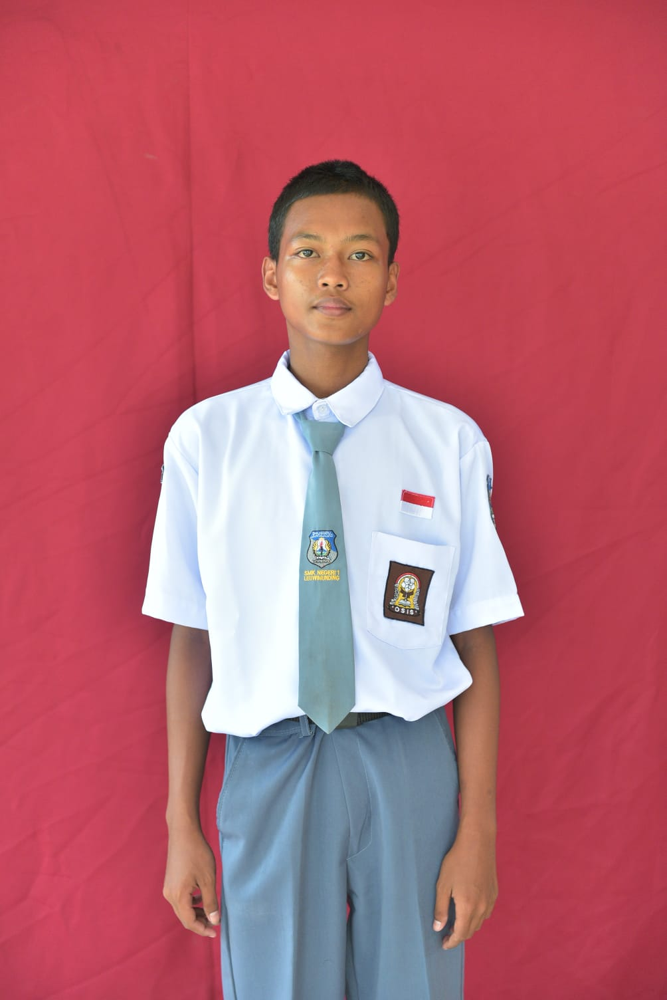

Nama: Aziz Yusuf Permana
Tempat, Tanggal Lahir: Majalengka, 20 Juli 2010
Agama: Islam
Kelas: XI TJKT 2
Alamat: Desa Lame, Kec. leuwimunding, Kab. Majalengka
Hobi: Maen game
SMK Negeri 1 Leuwimunding: 2025-Sekarang
SMP Negeri 1 Leuwimunding: 2022-2025
SD Negeri lame 2: 2016-2022